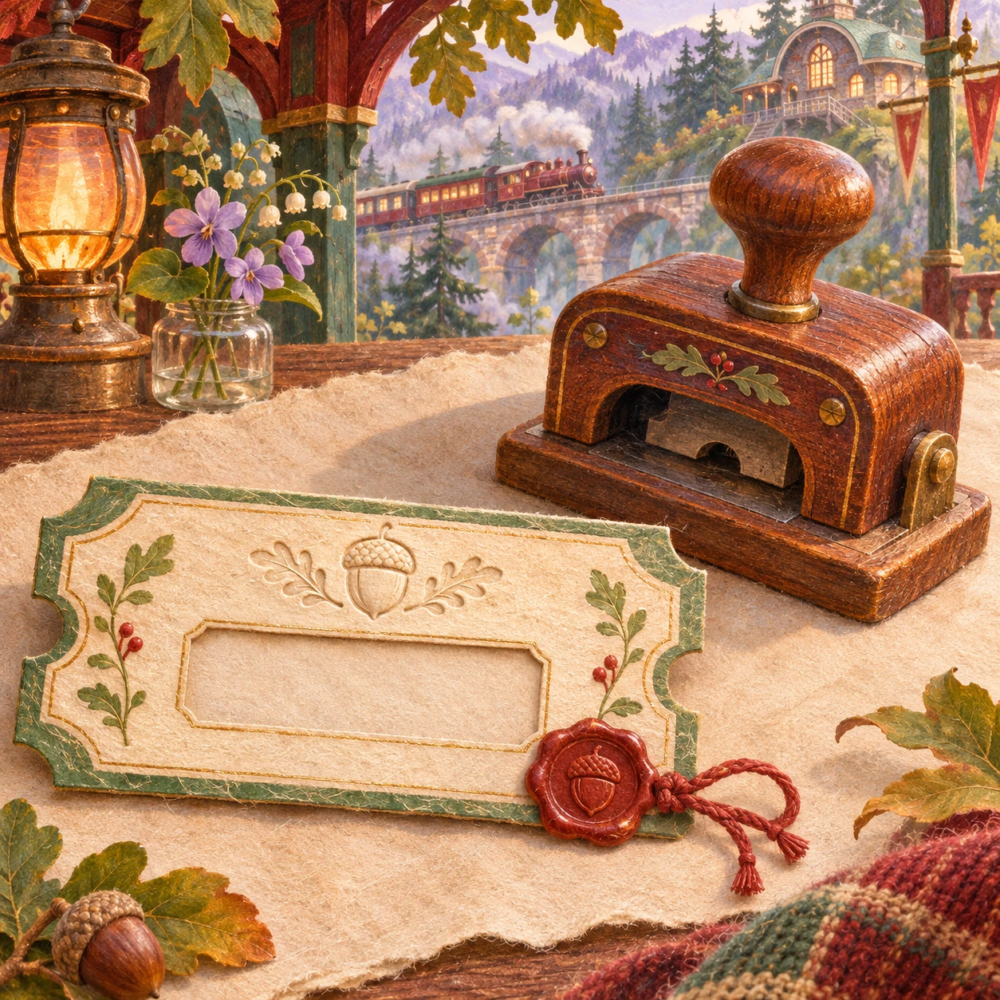
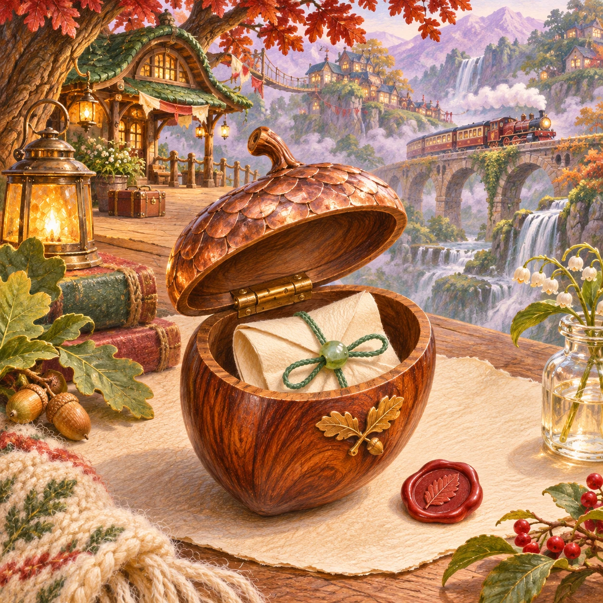
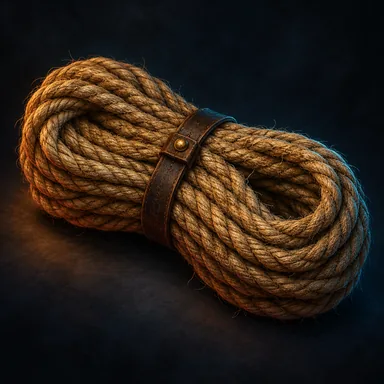

Билет с открытой датой
Кремовый билет с пустым окошком даты, зелёной каймой и знаком желудя.
Марфа вписывает удобную дату возвращения, когда владелец её выберет. Можно подарить приглашение другому персонажу.
Не телепортирует, не отменяет остановки и не заменяет договорённость с проводником.

Фонарь свободных светляков
Плетёный фонарь с тёплым зелёным светом и маленькой открывающейся дверцей.
Освещает тихую сцену и помогает рассмотреть детали. Светляки могут улететь и вернуться; они не обязаны выполнять команды.
Не ослепляет противников, не раскрывает тайны автоматически и не даёт скрытого бонуса к проверке.

Плащ общих заплаток
Уютный плащ из зелёных, кремовых, рыжих и синих лоскутов с деревянной застёжкой-листом.
Согревает в рассказе, служит ширмой или подстилкой; каждый желающий может добавить памятный стежок.
Не меняет класс брони, не делает невидимым и не даёт защиты от падения вместо страховки.

Сад в дорожной чашке
Починенная керамическая чашка с живой землёй, тремя ростками и деревянным блюдцем.
Сравнивать влажность, свет и уход в небольшом безопасном опыте; показывает, что условия можно менять и наблюдать.
Это образец для опыта, а не дом Тоша, бесконечная еда или мгновенное лекарство.

Почтовый желудь
Ладонный деревянный футляр в форме желудя, с медной крышечкой и чистым письмом внутри.
Оставить письмо другу, адрес для следующей встречи или благодарность. Доставка происходит через обычную почту.
Не посылает мысли на расстоянии и не заставляет адресата отвечать.

Дорожная куртка Бориса
Дорожная куртка Бориса
Владелец по комплекту: Борис Камнелист

Щит с медным листом
Щит с медным листом
Владелец по комплекту: Борис Камнелист

Страховочная верёвка
Страховочная верёвка
Владелец по комплекту: Борис Камнелист

Лесной бальзам
Лесной бальзам
Владелец по комплекту: Борис Камнелист
Дорожная куртка Ники
Дорожная куртка Ники
Владелец по комплекту: Ника Вереск

Набор тонких инструментов
Набор тонких инструментов
Владелец по комплекту: Ника Вереск
Лесной бальзам
Лесной бальзам
Владелец по комплекту: Ника Вереск
Дорожная куртка Яры
Дорожная куртка Яры
Владелец по комплекту: Яра Медуница

Сумка травницы
Сумка травницы
Владелец по комплекту: Яра Медуница
Лесной бальзам
Лесной бальзам
Владелец по комплекту: Яра Медуница

Картографические инструменты
Картографические инструменты
Владелец по комплекту: Орен Искрин
Лесной бальзам
Лесной бальзам
Владелец по комплекту: Орен Искрин